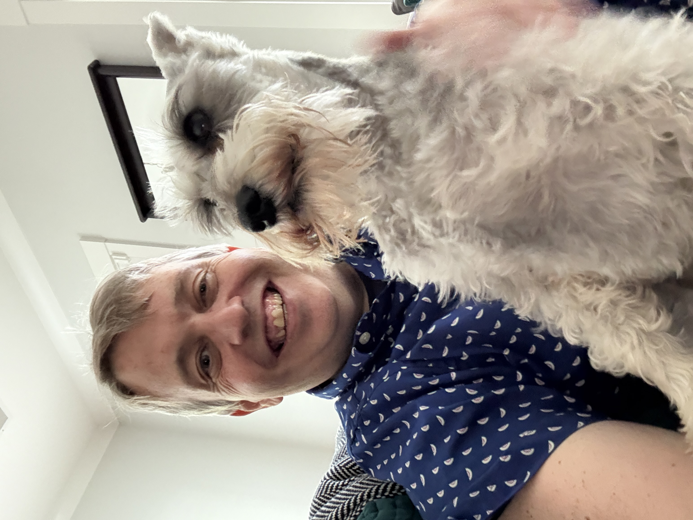
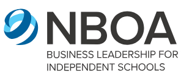
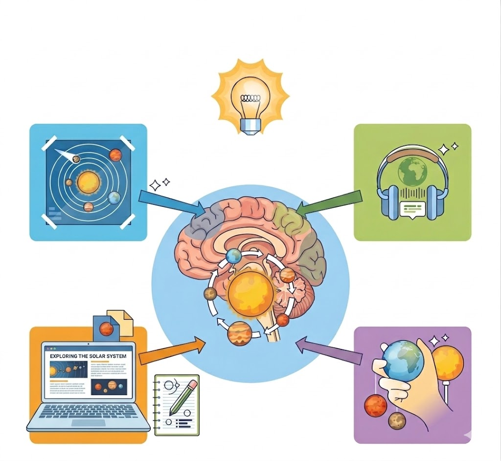

Kyle Brown is an educator first and a technology strategist second.
With over two decades of experience in the K-12 independent school ecosystem, Kyle brings a rare "Triple Advantage" to educational technology consulting: deep pedagogical rooting, national administrative recognition, and technical mastery.
Kyle has an academic background that bridges classical academic disciplines and modern technical proficiency.
He earned a Bachelor's degree in Classical Archaeology and Philosophy in 1997 from the University of Evansville, followed by a Master of Arts in Latin and Classical Studies in 2002 from the State University of New York at Albany.
His graduate research focused on the digital visualization and connection of interactive archaeological excavation data maps.
During his 15-year tenure as a middle and high school Latin instructor at First Baptist School of Charleston, Kyle also moved into technology leadership in 2009. He began serving as the school's first Google Workspace for Education edtech administrator and coach after spearheading the implementation of Chromebooks and Google apps.
Kyle’s extensive experience in traditional teaching affords him significant professional credibility and a deep understanding of the challenges faced by educators.
In his approach to technology frameworks, Kyle emphasizes learning objectives and structured classroom management, ensuring digital resources support effective teaching rather than acting as a distraction.
For the past nine years, Kyle has served as the Director of Educational Technology at Trident Academy in Mount Pleasant, South Carolina, a leading institution specializing in multi-sensory instruction for students with language based learning differences such as dyslexia and dysgraphia but who otherwise possess average-to-high level IQs.
His work at the intersection of operational efficiency and instructional innovation has earned significant benchmarks:

Administrative Excellence: Kyle is a recipient of the 2021 National Business Officers Association (NBOA) Professional Achievement Award.
This national honor recognizes outstanding contributions to school operations, financial health, and strategic risk management, ensuring your school's tech budget centers on high-ROI, sustainable tools rather than "shiny new objects".
Technical Mastery: Kyle is a certified Google for Education Certified Trainer, a scarce distinction in the Charleston area.
He is one of only seven educators within a 50-mile radius of Charleston to hold this title, providing expertise in an ecosystem utilized by 68% of U.S. school districts (and growing).
Kyle’s dedication to education has been deeply intertwined with the Charleston community since joining First Baptist School in 2003. It was there in 2008 where he met his late wife, Melissa Legare.
Married in 2015 and widowed in 2020, Kyle remains passionately committed to honoring her memory and legacy of service and love to her students.
He actively helps manage and maintain two annual scholarships in her honor: one supporting students at First Baptist School, and another benefiting college-bound members of The Boon Project, a Lowcountry non-profit where Melissa proudly served as a board member.
Kyle devotes his personal and professional life to keeping her spirit alive.
Kyle conducts his consulting based on the core philosophy of "Augmentation, Not Automation," maintaining that technology should never "drive the bus" in educational environments.
Viewing hardware and software as a foundational toolkit, much like a set of high-quality colored pencils for coded note-taking.

He utilizes these tools to facilitate multi-modal learning, address executive function hurdles, and enhance academic understanding under human supervision.
Kyle emphasizes that digital solutions are not a universal requirement for every challenge;
although strategic technology use is impactful, it should be applied purposefully rather than simply because it exists.
Through custom professional development, long-term strategic implementation, and tailored "Teacher Action Plans," Kyle helps schools transition technology from a source of passive distraction into an active, professional instrument for both student expression and operational excellence.
These proprietary plans ensure that high-level strategy translates into visible classroom results by pinpointing mission-aligned learning goals, standardizing specific technical workflows alongside academic directives, and establishing clear technology guardrails to safeguard academic integrity.